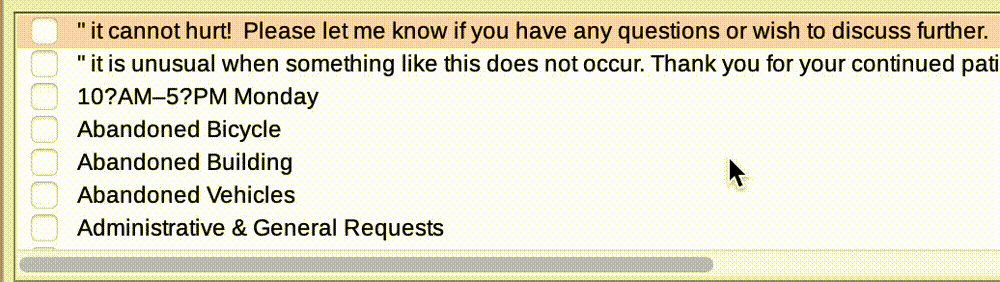

Investigate Boston 3-1-1 Data in QGIS
- In a web browser search “Boston 311 data”.
- Navigate to the 311 SERVICE REQUESTS webpage .
- Click
CRM VALUE CODEXand observe the data documentation telling you which values are encoded into the table. - Click “311 SERVICE REQUESTS - 2024” and observe the spreadsheet.
- Discuss observations as a group.
- Download a pre-processed version of the data from DATA LINK. This spreadsheet contains only 311 service requests reporting potholes.

- Search for 3-1-1 data
- Look @ metadata
- Download processed version
- Open in QGIS + inspect
Set coordinate reference system.